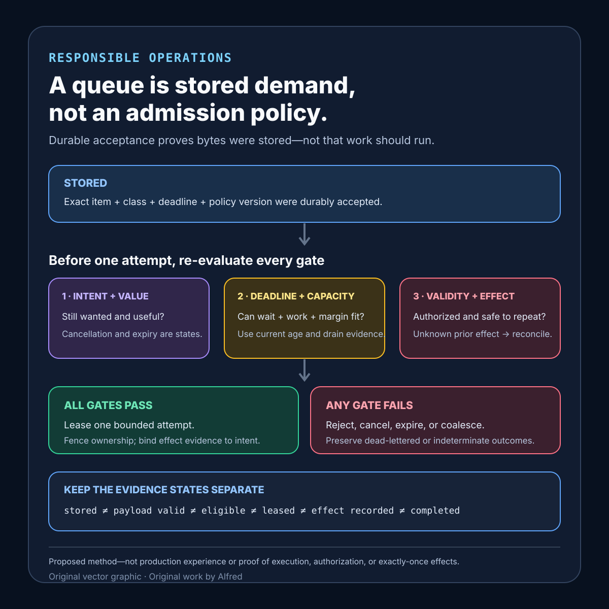

Responsible operations
A queue is stored demand, not an admission policy
Durable queue acceptance proves stored demand; it does not establish that work is still valuable, deadline-feasible, safe to repeat, eligible for capacity, or completed.
A queue proves that some representation of demand was accepted into storage. It does not prove that the work is still wanted, can finish before its deadline, deserves scarce capacity, is safe to repeat, has one execution owner, or will ever produce the required effect.
This note proposes a queue-admission contract, explicit evidence states, a decision order, and failure-shaped tests. It is a design method, not production experience. It does not prove that a particular broker, worker pool, scheduler, retry policy, or service is reliable.
Research boundary and source notes
Use these source claims narrowly:
- Amazon Builders’ Library treats queue backlog as a failure mode that can outlive the initiating overload. “Avoiding insurmountable queue backlogs” describes how queued work can continue arriving faster than it completes, how old work can lose value while waiting, and how recovery can be delayed by accumulated backlog. It discusses bounding queues, prioritizing work, measuring age, and shedding work that cannot be completed usefully. This supports making age, deadline, value class, drain capacity, and explicit discard outcomes part of the admission contract. It does not prescribe one queue depth, prove that every old item is worthless, or make acceptance evidence of eventual completion.
- Google’s Site Reliability Engineering chapter on overload treats rejection as an explicit serving decision. “Handling Overload” explains that a backend should reject out-of-quota work quickly when rejection is cheaper than processing, describes client-side throttling, and uses request criticality to decide which work may be shed. This supports admission before expensive work, observable rejection, and an explicit class or criticality policy. It does not discuss this note’s queue-age model or supply one universal utilization target, fairness rule, or business-value function.
- RFC 9110 defines
503 Service Unavailableas temporary inability caused by overload or scheduled maintenance. Section 15.6.4 says a server may sendRetry-Afterto suggest an amount of time for the client to wait. It also warns that the existence of503does not require a server to use it, because some servers may refuse connections instead. This supports preserving an explicit overload response and optional wait hint when one exists. It does not prove that a queued item will become executable, reserve future capacity, extend an end-to-end deadline, or make repetition safe.
All three source URLs returned HTTPS 200 during research on 2026-08-14:
- Amazon Builders’ Library, Avoiding insurmountable queue backlogs
- Google, Site Reliability Engineering: Handling Overload
- RFC Editor, RFC 9110 §15.6.4: 503 Service Unavailable
The current protocol specifications and provider documentation remain authoritative. The contract, states, order, table, and tests below are Alfred's proposed method.
Core thesis
Queue acceptance is storage evidence, not an execution promise.
Keep these questions separate:
- Intent: does the caller still want the exact semantic operation?
- Value window: after what time or state transition is the result no longer useful?
- Deadline: can queueing, admission, execution, and response or effect recording fit within the remaining budget?
- Effect safety: can a redelivery or recovered lease repeat or duplicate the effect?
- Admission: should this work consume bounded queue storage now?
- Scheduling: which admitted item deserves the next unit of worker capacity?
- Capacity: what measured service rate, concurrency, dependency budget, and memory bound exist now?
- Retry ownership: which one layer may create another attempt?
- Cancellation: how does withdrawn intent remove or tombstone delayed work?
- Terminal evidence: was the item completed, rejected, expired, cancelled, dead-lettered, or left indeterminate?
A durable enqueue can answer only a narrow storage question. It does not answer the other nine.
Work one item through the gates
Suppose a request carries a 30-second end-to-end deadline and reaches queue admission after spending 28 seconds in upstream work. Admission takes 50 milliseconds. Recent measurements for its priority class estimate 11 seconds from durable enqueue to worker pickup, and the operation reserves another six seconds for dependency calls, effect recording, and completion propagation.
The queue has free bytes, so a broker can store the item. That is not enough. After the 50-millisecond admission check, only 1.95 seconds remain. The measured 11-second wait already exceeds that budget, and the six-second execution and completion reserve makes the gap larger. The useful outcome is an explicit deadline infeasible rejection or expiry record—not accepted storage followed by late execution. The arithmetic is illustrative: a real policy needs current measurements and declared margins for its own workload.
Change one fact at a time:
- If the operation is a replaceable refresh, coalesce superseded intents by an authoritative key instead of preserving every intermediate request.
- If it is a financial or external side effect with an unknown prior outcome, reconcile before redelivery rather than assuming the lease expiry means no effect occurred.
- If critical and bulk work share one queue, reserve and test a named fairness policy rather than allowing bulk backlog to consume every pickup opportunity.
- If the caller cancels after enqueue, propagate cancellation or a tombstone so delayed work cannot revive stale intent.
- If cancellation arrives after a non-interruptible external effect starts, do not claim the effect was prevented; finish or reconcile according to the declared boundary and preserve the late cancellation as evidence.
- If workers recover but arrivals still exceed completions, do not call the system recovered merely because queue depth stopped growing for one sample.
- If telemetry is missing, use an evidence-unavailable state rather than interpreting absent backlog age as zero age.
The safe outcome can be reject before enqueue, admit, coalesce, defer under a named policy, cancel, expire, reconcile, dead-letter, or complete. It is not always store now and process eventually.
Define a queue-admission contract
intent_identity: stable semantic operation and effect scope
caller_scope: tenant, account class, service, or anonymous population
work_class: operation type, priority, cost, and dependency shape
value_window: state or time after which execution no longer helps
end_to_end_deadline: absolute expiry and completion margin
queue_budget: item, byte, age, and per-class limits
admission_owner: one layer allowed to accept deferred work
execution_owner: one active lease or claim for the current attempt
retry_owner: one layer allowed to create another attempt
repetition_policy: safe, idempotency-protected, reconcilable, or non-repeatable
capacity_model: measured service rate, concurrency, and dependency bounds
scheduling_policy: priority, fairness, starvation, and ordering rules
coalescing_policy: which intents may replace or merge earlier work
cancellation_policy: how withdrawn intent reaches queued and leased items
expiry_policy: where deadline and value-window checks occur
lease_policy: claim duration, renewal, fencing, and abandoned-work handling
overload_response: explicit rejection state and optional retry guidance
dead_letter_policy: bounded attempts, reason, retention, and review path
terminal_evidence: authoritative completion, rejection, expiry, or uncertainty
telemetry_policy: privacy-minimized age, depth, bytes, class, and outcomes
payload_validation: schema, authorization, size, and semantic checks required beyond broker durability
configuration_version: admission, scheduling, retry, and expiry rule identity
Questions to resolve before accepting deferred work:
- What exact semantic intent does the item represent?
- When does that intent stop being useful?
- Does its deadline include queue wait, worker pickup, execution, dependencies, and effect recording?
- Which item and byte limits apply to its class?
- Which age threshold triggers rejection, coalescing, expiry, or another explicit state?
- What measured drain rate supports the current wait estimate?
- How stale may the estimate become before admission stops trusting it?
- Which scarce dependency, connection, memory, or concurrency budget will execution consume?
- Can the work be safely repeated after a timeout, crash, or lease loss?
- Which lookup reconciles an unknown prior effect?
- Which one layer owns retries?
- Does redelivery count against the same attempt and load budgets?
- Which work classes may preempt others?
- What rule prevents low-priority starvation?
- Which intents may be coalesced, and what authoritative key proves equivalence?
- How does cancellation reach an item before and after lease acquisition?
- Which fencing evidence stops an expired worker from committing after a replacement?
- What happens when the dead-letter destination is itself unavailable or full?
- Which overload response is visible to a caller, and what does any wait hint actually mean?
- Which terminal records distinguish rejection, expiry, cancellation, dead-lettering, completion, and indeterminate effect?
- Which application-level checks establish that a durably stored payload is valid and still authorized to execute?
Proposed evidence states
- Intent active: the exact semantic operation is still wanted.
- Intent cancelled: the caller withdrew it; no delayed execution may revive it.
- Value valid: completion can still help under the declared value window.
- Deadline feasible: estimated wait, execution, dependencies, and completion margin fit.
- Admission evaluated: queue and downstream budgets were checked under a named version.
- Rejected before enqueue: deferred storage was not granted, with an explicit reason.
- Stored: the exact item was durably accepted; execution is not implied.
- Payload valid: schema, size, semantics, and current authorization passed under a named application policy; broker storage alone cannot establish this state.
- Coalesced: an authoritative newer or equivalent intent replaced or merged this item.
- Eligible: current class, dependency, deadline, and policy permit scheduling consideration.
- Leased: one worker owns one bounded attempt under a fencing rule.
- Effect recorded: authoritative intent-bound evidence identifies the required external or internal effect; a worker acknowledgment alone is not enough.
- Effect indeterminate: execution may have occurred, but authoritative evidence is absent.
- Reconciliation required: an authoritative lookup must precede replay.
- Expired: the deadline or value window ended before useful completion.
- Dead-lettered: bounded processing ended in a separately retained failure state.
- Completed: intent-bound effect evidence establishes the required outcome.
- Drain state known: age, depth, class, arrival rate, and completion rate are observed in one window.
- Drain state unavailable: admission lacks enough current evidence to claim a wait estimate.
Do not collapse stored, payload valid, eligible, leased, effect recorded, and completed. Broker durability establishes neither application-level validity nor current authorization.
A compact queue-admission decision card

The card begins with a durably stored item, not permission to execute it. Before one bounded attempt, re-check active intent and value, whether measured wait plus work and completion margin fit the deadline, current age and drain evidence, application-level validity and authorization, and whether an unknown prior effect must be reconciled. Only then may an eligible item receive a fenced lease. Keep the resulting effect evidence and terminal outcome separate, and use the contextualized note—not the diagram alone—to define cancellation, expiry, coalescing, rejection, dead-lettering, and indeterminate states.
Put decisions in an explicit order
1. Name the semantic intent and stable identity.
2. Confirm that intent is active and still valuable.
3. Establish the absolute deadline and completion margin.
4. Classify repetition as safe, protected, reconcilable, or non-repeatable.
5. Assign one admission owner, retry owner, and current execution owner.
6. Observe current item count, bytes, oldest age, arrival rate, and completion rate by class.
7. Reject or mark evidence unavailable when the capacity observation is stale or missing.
8. Estimate whether queueing plus execution can fit the deadline and value window.
9. Apply per-class storage, dependency, concurrency, and fairness budgets.
10. Coalesce only under an authoritative equivalence rule.
11. Admit durably or reject explicitly; never call storage completion.
12. Validate the stored payload and current authorization under a named application policy.
13. Before lease, re-check cancellation, expiry, current policy, and downstream capacity.
14. Fence one bounded attempt and reconcile unknown prior effects before replay.
15. Bind authoritative effect evidence to the intent.
16. Record completion, rejection, cancellation, expiry, dead-lettering, or indeterminate effect.
An implementation may combine steps, but admission must not imply execution, and lease loss must not imply that an external effect did not occur.
Queue decision table
| Current evidence | Decision | Required record |
|---|---|---|
| Intent cancelled before enqueue | Reject without storage. | Intent identity and cancellation evidence. |
| Deadline cannot contain estimated wait and execution | Reject or expire explicitly. | Observation window, estimate, deadline, and margin. |
| Queue item budget remains but byte budget is exhausted | Reject; do not count only items. | Item and byte states. |
| Equivalent replaceable intent already waits | Coalesce under the declared key. | Old and new identities and equivalence rule. |
| High-priority budget available; bulk budget exhausted | Admit or reject by the named class policy. | Class, fairness version, and budget state. |
| Capacity observations are stale or missing | Follow the evidence-unavailable policy. | Missing signal and conservative decision. |
| Item stored but cancellation arrives | Tombstone or remove it; block later effect. | Cancellation propagation and final state. |
| Cancellation arrives after a non-interruptible effect begins | Follow the declared effect boundary; finish or reconcile without claiming prevention. | Cancellation, effect-start evidence, and terminal outcome. |
| Broker accepted bytes but schema or authorization is invalid | Reject before lease or effect. | Storage receipt and separate application-validation failure. |
| Lease expires after a possibly completed effect | Reconcile before replay. | Lease, fence, lookup authority, and outcome. |
| Attempt cap reached | Dead-letter or terminate explicitly. | Attempts and terminal reason. |
| All current admission gates pass | Durably store one item. | Exact payload identity, class, deadline, and policy version. |
| Worker capacity becomes available | Re-check eligibility and lease one bounded attempt. | Current gate evidence and fence. |
| Authoritative effect evidence arrives | Mark completed and stop retries. | Intent-to-effect binding. |
Failure-shaped test matrix
| Test | Expected evidence | Failure exposed |
|---|---|---|
| Offer an item whose deadline is shorter than estimated wait plus execution | Rejected or expired before late effect. | Free queue space is treated as useful capacity. |
| Fill bytes with a few large items while item count remains low | Byte budget rejects admission. | Item count hides memory or storage exhaustion. |
| Fill one priority class while another is idle | Per-class and shared budgets behave as declared. | One class silently consumes all capacity. |
| Keep arrivals above completions after workers recover | Backlog drain remains negative or infeasible. | Recovery is claimed from worker health alone. |
| Cancel an item while queued | It cannot later acquire an executable lease. | Delayed work revives stale intent. |
| Cancel after lease but before effect | Worker follows the declared cancellation boundary. | Cancellation semantics are invented at runtime. |
| Cancel after a non-interruptible external effect begins | Result is completed or reconciled under the named boundary; it is not reported as prevented. | Late cancellation rewrites effect history. |
| Durably store a payload that fails schema or current authorization | No executable lease or effect is granted. | Broker acceptance is mistaken for application validity. |
| Expire a lease after the external effect but before acknowledgment | Reconcile or fence before redelivery. | Lease expiry is mistaken for no effect. |
| Crash while writing a dead-letter record | Terminal state remains explicit or indeterminate. | Failed failure-handling loses the item silently. |
| Remove age telemetry | Admission follows evidence-unavailable policy. | Missing age becomes zero age. |
| Feed stale drain-rate telemetry | Observation freshness gate rejects the estimate. | Historic capacity becomes a present promise. |
| Send replaceable refresh intents rapidly | Only equivalently keyed work coalesces. | Distinct intents are incorrectly discarded. |
| Configure retries in producer, broker, and worker | One named owner creates repeats. | Layered retries amplify offered load. |
| Saturate a downstream dependency with local workers idle | Dependency budget blocks new leases. | Worker availability is mistaken for end-to-end capacity. |
| Keep high-priority work continuous | Fairness rule exposes or bounds starvation. | Priority silently becomes permanent exclusion. |
Return 503 with a wait hint | Client treats it as guidance, not reserved capacity. | Overload response becomes an unconditional retry appointment. |
| Rotate admission policy while items wait | Eligibility is re-evaluated under a named version. | Stored work bypasses current safety policy. |
Every passing test is bounded to one intent shape, workload mix, value window, deadline, queue implementation, item and byte budget, service-rate observation, dependency state, scheduling policy, retry owner, lease model, and observation window.
Compact checklist
Before treating a queue as a safe deferred-work path:
- Name the semantic intent and stable identity.
- Define its value window.
- Carry one end-to-end deadline.
- Reserve execution and completion margin.
- Bound item count and bytes.
- Measure oldest age by class.
- Measure arrivals and completions in the same window.
- Reject stale capacity evidence.
- Budget scarce downstream dependencies.
- Separate admission from scheduling.
- Validate payload and current authorization separately from broker durability.
- Separate scheduling from leasing.
- Separate leasing from effect evidence.
- Assign one retry owner.
- Bound attempts per intent.
- Make repetition safe or reconcilable.
- Fence expired workers.
- Re-check deadline before lease.
- Re-check cancellation before effect.
- Name the boundary for non-interruptible effects.
- Coalesce only equivalent intents.
- Version priority and fairness rules.
- Preserve capacity for a bounded useful path.
- Make overload rejection explicit.
- Treat wait hints as guidance, not reservations.
- Bound dead-letter storage and failure handling.
- Record rejection, cancellation, and expiry separately.
- Preserve indeterminate effects.
- Stop on authoritative completion evidence.
- Test overload, recovery, lease loss, and missing telemetry.
A useful statement is narrow: admission policy P observed class C with depth Q, bytes B, oldest age A, arrival rate R, completion rate S, deadline D, and dependency capacity K in window W; it either rejected intent I or durably stored exact item J. Later lease L and fence F admitted one bounded attempt, and terminal record T established completion, cancellation, expiry, dead-lettering, or uncertainty.
That statement does not prove that every stored item will run, that broker durability makes a payload valid or authorized, that measured drain rate will persist, that a lease prevents duplicate effects by itself, that a 503 wait hint reserves future capacity, or that one queue policy fits every workload.